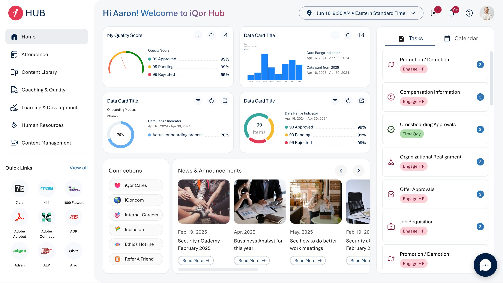

01 Overview
iQor HUB V2 is the current production version of the company's internal operating platform, serving over 44,000 employees worldwide. Built on the foundation established by V1, this iteration focused on resolving friction points discovered through real usage and expanding the platform's communication capabilities.
The redesign touched every layer of the product — information architecture, navigation patterns, the dashboard system, and the communication module — while preserving the role-aware access model that made V1 successful. The result is a platform that feels as cohesive for a first-day employee as it does for a tenured power user.
02 The Problem
Six months of V1 in production surfaced a clear set of recurring issues. Navigation depth was the most cited pain point — employees with broad tool access had to traverse multiple menu layers to reach frequently used applications, a problem that grew worse as iQor onboarded more internal services to the HUB.
The communication module, built as a lightweight addition in V1, became a bottleneck. Team leads reported that the absence of threaded messaging and notification grouping made high-volume channels unusable. Meanwhile, the static dashboard layout left no room for employees to surface the information most relevant to their daily routines.
03 Process
The V2 process started with data before it started with design. We pulled six months of analytics from V1 — heatmaps, navigation paths, drop-off points, and feature usage rates — and cross-referenced those signals against a structured set of employee interviews conducted across four departments and three regional offices.
The pattern that emerged from both sources was consistent: employees weren't struggling with what the platform offered, they were struggling with how to reach it. That insight reframed V2 entirely: the primary design challenge was navigation architecture, not feature addition.
iQor HUB V2, redesigned navigation and dashboard system
With that anchor in place, we ran two rounds of concept testing. The first tested three navigation models with a cross-functional group of 18 employees. The second validated the winning direction with a broader cohort of 40 participants before moving to high-fidelity design.
Prototypes were built in Figma and tested iteratively, with each round producing a prioritized list of issues resolved before the next cycle began. The communication module was designed in parallel by a second workstream, then integrated in the final sprint before handoff to development.
04 Solution
V2 introduced a persistent shortcut rail that puts the eight most-accessed applications one click away regardless of where the employee is in the platform. Application navigation was restructured from a deep menu tree into a flat, searchable launcher — reducing median navigation time from four interactions to one.
The communication module was rebuilt from the ground up. Threaded messaging, notification batching, and channel-level read receipts addressed the high-volume channel problem directly. Video calls were upgraded from a third-party embed to a native interface, removing the context break that came with launching an external window.

iQor HUB V1 — the baseline that informed V2's redesign priorities
iQor HUB V2, platform walkthrough
The dashboard system received a modular redesign. Employees can now pin, reorder, and resize the insight widgets most relevant to their role, giving managers a metrics-first view while keeping frontline agents focused on their task queue. The role-aware access model from V1 was preserved and extended — now covering 14 distinct role profiles across the organization.
05 Results
The following metrics reflect performance improvements measured after the V2 rollout across iQor's global workforce.
91%
Platform satisfaction score
74%
Reduction in navigation steps
3×
Increase in comms module usage